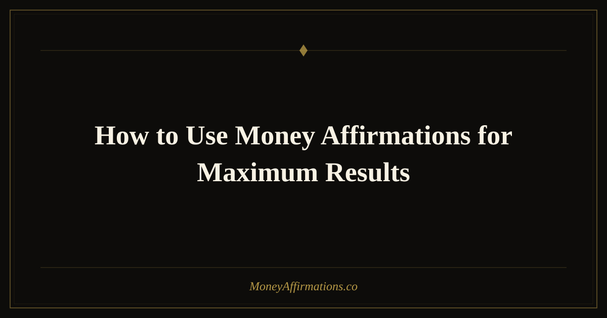

How to Use Money Affirmations for Maximum Results

Knowing the right affirmations is only half the equation. The other half — the half most people skip — is knowing exactly how to use them. You can have the most potent money affirmation in the world and still see zero results if you repeat it mindlessly while scrolling your phone. The method matters as much as the words. This guide breaks down the optimal techniques, timings, and habits that transform affirmations from idle repetition into a genuine reprogramming practice. Whether you have tried affirmations before and been disappointed, or you are starting fresh, the approach laid out here gives your practice the best possible foundation for producing real, measurable shifts in how you relate to and attract money.
What are money affirmations?
Money affirmations are intentional, present-tense statements that you repeat to reshape your subconscious beliefs about wealth, income, and financial worthiness. They operate on the principle of neuroplasticity — the brain's proven capacity to form new neural pathways in response to repeated input. Each time you state an affirmation with genuine feeling, you reinforce a new neural track. Over weeks of consistent practice, that track deepens into a default pathway, meaning your automatic thoughts about money begin to shift without effort. The practice is grounded in self-affirmation research from social psychology, which shows that affirming core values reduces threat-based thinking and increases openness to change — both essential ingredients for financial transformation.
12 affirmations paired with usage tips
- I am fully open to receiving unexpected money and financial blessings today. — Say this first thing in the morning before checking any screens, to prime your reticular activating system.
- I write my financial goals with clarity and I take inspired action toward them daily. — Pair with your written goals journal; read your goals immediately before or after this affirmation.
- I am a confident and capable steward of money at every income level. — Use during mirror work; hold eye contact with yourself for the full repetition.
- My savings grow consistently and I feel proud watching my wealth build. — Say this each time you log in to your bank account or savings app.
- I am paid abundantly for the skills and value I bring to every situation. — Repeat three times before any negotiation, rate conversation, or client meeting.
- Money is a tool that I use wisely to create the life I love. — Use when making purchasing decisions to anchor a healthy, empowered money relationship.
- I let go of financial stress and trust that I always find a way forward. — Breathe deeply as you say this; use it specifically when financial anxiety spikes.
- I attract lucrative opportunities that align perfectly with my values and talents. — Write in your journal each morning for maximum impact; follow it with two minutes of visualization.
- Wealth is available to me and I claim my share with gratitude and joy. — Combine with a gratitude list of current financial positives, however small.
- My relationship with money grows healthier and more empowered every single day. — Use as a closing affirmation at the end of each session to seal the practice with forward momentum.
- I trust the process of building wealth and I celebrate every step forward. — Keep on a phone wallpaper or sticky note for midday reminders when motivation dips.
- Abundance is my birthright and I step into it fully, starting right now. — Use during meditation or breath work; inhale on the first half, exhale on the second.
How to use these affirmations
The single most important principle for using money affirmations effectively is state before statement. You cannot rush straight from financial anxiety into a powerful affirmation and expect it to land. You need to shift your emotional state first, even slightly, so the words fall on receptive ground. Spend 60 seconds before your practice doing slow, deep breaths — four counts in, four counts out. This activates the parasympathetic nervous system, reduces cortisol, and opens the mind to new input.
Once you are in a calmer state, speak your chosen affirmations aloud at a deliberate pace. Three to five repetitions per affirmation is ideal. You are looking for the feeling of the words, not just the sound of them. If a phrase lands flat, slow down even more. Linger on the meaningful words. "I am fully open to receiving" is very different from speed-reading the same sentence.
For maximum results, practice at two anchored times daily: immediately after waking, when the brain is in the alpha wave state and highly receptive, and just before sleep, when you transition back into that same receptive state. A five-minute session at each anchor adds up to 70 minutes of practice per week — enough to produce measurable change within a month.
Tips to make them work faster
- Use situation-specific affirmations. Match affirmations to specific moments of financial friction — one for bill-paying, one for salary negotiations, one for when you check your account. Contextual triggers make affirmations more potent.
- Record yourself and play it back. Hearing your own voice saying powerful things about your financial life is uniquely effective. Your brain responds to your own voice in a deeply personal way that other audio cannot replicate.
- Follow each affirmation with a question. After saying "I attract lucrative opportunities," ask yourself "What's one opportunity I can act on today?" This bridges belief and behavior, which is where real change happens.
- Practice during physical movement. Walking, stretching, or light exercise while repeating affirmations encodes them in procedural and emotional memory simultaneously, deepening the effect.
- Review your progress weekly. Every Sunday, write three examples from the past week where a money affirmation seemed to show up in your reality. This builds a personal evidence base that accelerates your belief.
Frequently Asked Questions
Is it better to say affirmations out loud or silently?
Both work, but research on vocalization suggests that speaking aloud engages more of the brain — including auditory processing and motor memory — than silent reading. The combination of forming the words with your mouth and hearing them with your ears creates a richer, more multi-sensory experience that deepens neural encoding. If you cannot speak aloud (e.g., in a public space), whispering works nearly as well. Silent affirmation is still valuable; just be more deliberate about generating genuine emotion to compensate for the reduced sensory input.
How many times should I repeat each affirmation per session?
Three to five repetitions per affirmation is the sweet spot for most people. Fewer than three may not create enough of an impression; more than five in immediate succession can start to feel mechanical, which defeats the purpose. The quality of attention matters more than quantity. Five deeply felt repetitions with pauses between them will outperform twenty rushed ones. If you practice twice daily, you accumulate 6 to 10 meaningful impressions of each affirmation per day — more than enough for real neurological change over time.
Should I use the same affirmations every day or rotate them?
For the first 30 days, stick with a consistent set of three to five affirmations. Consistency builds depth, and depth is what creates lasting change. After 30 days, you will likely notice that some affirmations now feel completely natural — those have been integrated. At that point, you can graduate to more ambitious statements and add new ones that reflect your evolving financial goals. Rotating too early fragments your practice and prevents any single belief from fully taking root.
Deepen your practice even further by exploring the full money affirmations collection — organized by goal, emotion, and life situation to help you find the perfect words for wherever you are on your financial path.